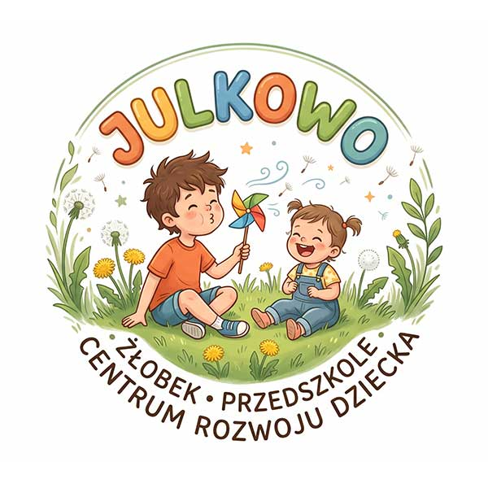
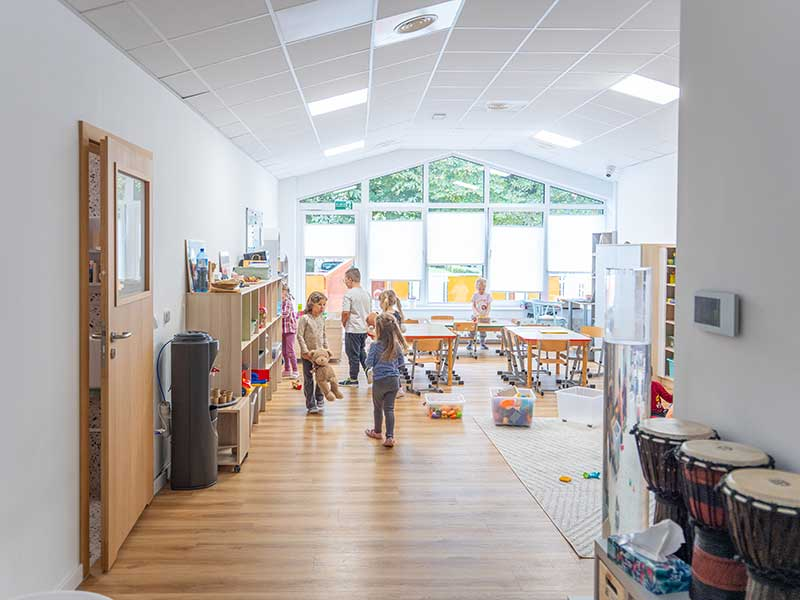
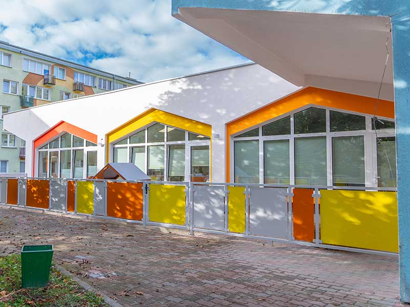
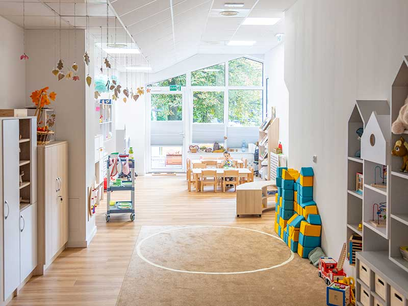
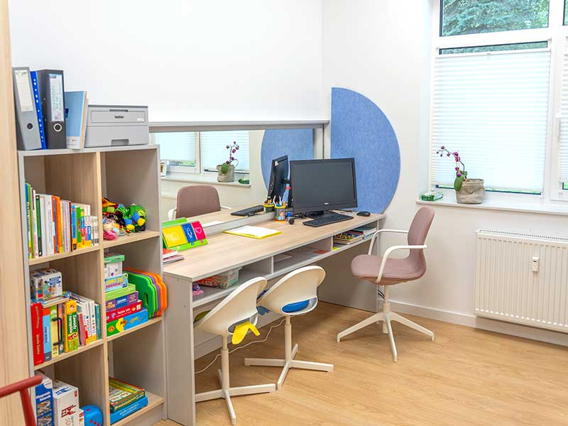
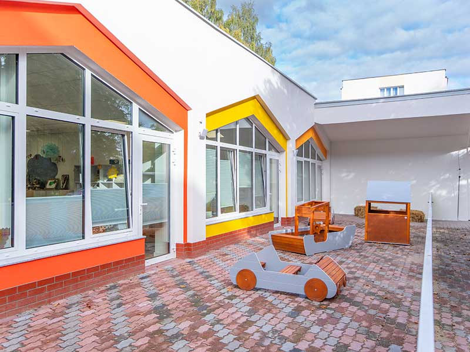

Centrum Rozwoju Dziecka • Żłobek • Przedszkole
TU DZIECKO ROZKWITA
Z UŚMIECHEM!
Bezpieczna, ciepła przystań pełna miłości, twórczej zabawy i profesjonalnego wsparcia. Tworzymy miejsce, w którym małe grupy dają wielkie możliwości wszechstronnego rozwoju każdego malucha.

Język angielski
Klawiszelove
Standard jakości
Teachstone CLASS
Żłobek i Przedszkole prowadzone przez Towarzystwo Przyjaciół Dzieci Oddział Okręgowy w Koszalinie
Towarzystwo Przyjaciół Dzieci Oddział Okręgowy w Koszalinie to Wojewódzki Lider Akademii Rozwoju Żłobków. Od dziesięcioleci tworzymy środowisko, w którym każde dziecko czuje się bezpieczne, zauważone i docenione. Placówka „JULKOWO – Żłobek, Przedszkole, Centrum Rozwoju Dziecka” przy ul. Kornela Makuszyńskiego 2, 75-442 Koszalin oferuje rodzinom nowoczesne zaplecze opiekuńczo-edukacyjne, bogatą ofertę terapeutyczną i unikalne zajęcia autorskie.
Nasze Atuty – Standard, na który zasługuje Twój Maluch
Łączymy domowe ciepło z unikalnym zapleczem diagnostyczno-terapeutycznym i bogatą ofertą twórczą.
Ciepła, Rodzinna Atmosfera
Bezstresowa adaptacja, empatyczne ciocie i nauczyciele. Budujemy poczucie bezpieczeństwa, akceptacji i zaufania od pierwszego dnia.
Kreatywne Zajęcia Każdego Dnia
Eksperymenty, plastyka sensoryczna, teatr, ruch i odkrywanie świata wszystkimi zmysłami. U nas nuda nie istnieje!
Nowoczesne Przestronne Sale
Jasne, ergonomiczne i atestowane wyposażenie dopasowane do wzrostu i potrzeb dzieci. Przestrzeń sprzyjająca swobodnej zabawie.
Sala Integracji Sensorycznej
Własna sala SI i Doświadczania Świata. Specjalistyczny sprzęt stymulujący zmysły, równowagę i koordynację pod okiem terapeutów.
Plac Zabaw z Warzywnikiem
Duży, bezpieczny teren zielony z własnym ogródkiem warzywnym i miejscem piknikowym. Dzieci sieją, pielęgnują i zbierają plony!
Gabinet Biofeedback
Nowoczesny trening fal mózgowych EEG-Biofeedback poprawiający koncentrację, pamięć, wyciszenie i odporność na stres.
Zdrowe Posiłki DOMIR
Smaczne, zbilansowane dania przygotowywane przez uznany DOMIR Catering Adrianna Andrusieczko. Z uwzględnieniem diet i alergii.
Niskie Czesne & Dofinansowania
Jako organizacja pożytku publicznego dbamy o dostępność dla wszystkich rodzin. Korzystamy ze wsparcia programów miejskich i rządowych.
Autorskie Programy Edukacyjne i Artystyczne
Wspieramy naturalną ciekawość dzieci poprzez muzykę na żywo, język angielski i codzienny kontakt z przyrodą.
Program „Dzieci Mają Wychodne”
Nasza placówka bierze udział w ogólnopolskim programie edukacji w plenerze. Regularne wyjścia bez względu na pogodę budują odporność biologiczną, samodzielność i szacunek do natury.
- ✓ Codzienne spacery i leśne wyprawy
- ✓ Obserwacje mikroskopowe w ogródku
Muzyczny Język Angielski
Autorskie zajęcia językowe połączone z muzyką na żywo pod okiem Macieja Osady Sobczyńskiego. Dzieci przyswajają angielski naturalnie – śpiewając, tańcząc i improwizując przy pianinie.
- ✓ Zanurzenie w melodyce języka
- ✓ Żywy akompaniament muzyczny
Rytmika z Instrumentami & CLASS
Zajęcia rytmiczne z bogatym instrumentarium prowadzone przez profesjonalnego nauczyciela muzyki. Jakość relacji nauczyciel–dziecko monitoruje Certyfikowany Obserwator Teachstone CLASS.
- ✓ Gra na dzwonkach, bębenkach, marakasach
- ✓ Światowy standard jakości interakcji CLASS
Zespół 11 Etatowych Specjalistów na Miejscu
W Julkowie rodzic nie musi szukać pomocy w zewnętrznych poradniach. Nasi wykwalifikowani eksperci pracują z dziećmi na co dzień w ramach czesnego.
Psycholog
Wsparcie emocjonalne, adaptacja i rozwój społeczny
Logopeda
Korekcja wymowy, profilaktyka i stymulacja mowy
Pedagog Specjalny
Indywidualne ścieżki i dostosowanie programowe
Tyflopedagog
Wsparcie i rehabilitacja wzroku u dzieci
Surdopedagog
Wspomaganie percepcji słuchowej i komunikacji
Oligofrenopedagog
Edukacja i rewalidacja dzieci ze szczególnymi potrzebami
Pedagog Rodziny
Konsultacje dla rodziców i warsztaty wychowawcze
Muzykoterapeuta
Terapia dźwiękiem, wyciszanie i relaksacja
Terapeuta Biofeedback
Trening koncentracji i samoregulacji fal EEG
Nauczyciel Muzyki
Profesjonalna edukacja rytmiczno-muzyczna
Obserwator Teachstone CLASS
Certyfikowany audyt jakości relacji nauczyciel-dziecko wg standardu USA
✨ Zespół Julkowa to doświadczona, kierunkowo wykształcona i regularnie dokształcana kadra pedagogiczna.
Poznaj Przestrzeń JULKOWA
Zobacz jak przygotowaliśmy sale, ogród i gabinety terapeutyczne przy ul. Kornela Makuszyńskiego 2 w Koszalinie.

Przestronne, jasne sale zajęciowe
Atestowane zabawki, bezpieczne kąciki tematyczne i naturalne światło

Własna Sala SI i Doświadczania Świata
Podwieszany sprzęt terapeutyczny, kolumny wodne i basen z kulkami

Plac Zabaw z Ogródkiem Warzywnym
Własne grządki warzywne, strefa piknikowa i zielona trawka na zewnątrz

Przytulny Świat Maluszka
Dedykowane łóżeczka, materace do raczkowania i strefa wyciszenia

Gabinet Biofeedback EEG
Przyjazny fotel terapeutyczny, interaktywne gry biofeedbackowe

Strefa Piknikowa i Odpoczynku
Wspólne drugie śniadania na trawie i czytanie bajek pod chmurką
Jak Zapisać Dziecko do Placówki?
Zapewniamy kameralną opiekę zgodnie z naszą zasadą: „Małe grupy – wielkie możliwości”. Aby zapewnić komfort każdemu maluchowi, liczba miejsc jest ograniczona. Skontaktuj się z nami bezpośrednio, aby złożyć kartę zgłoszeniową.
Kontakt telefoniczny lub mailowy
Zadzwoń do biura TPD pod numer 94 342 56 27 lub napisz na przedszkola@tpd24.pl.
Złożenie karty zgłoszeniowej
Wypełnij kartę dziecka w biurze TPD przy ul. M.J. Piłsudskiego 11-15 lub pobierz ją ze strony.
Spokojna adaptacja
Ustalamy termin spotkania i serdecznie zapraszamy rodzica z dzieckiem na bezstresową adaptację.
Zadzwoń do naszego biura
Nasi koordynatorzy chętnie odpowiedzą na wszystkie pytania dotyczące dostępności miejsc, grup wiekowych, diet, dofinansowań oraz zajęć terapeutycznych.
Często Zadawane Pytania (FAQ)
Odpowiedzi na najczęściej zadawane pytania przez rodziców.
Dane Kontaktowe i Dojazd
Masz pytania dotyczące rekrutacji, czesnego lub adaptacji? Zadzwoń lub odwiedź nas w Koszalinie!
JULKOWO
Żłobek, Przedszkole, Centrum Rozwoju Dziecka
📍
ul. Kornela Makuszyńskiego 2
75-442 Koszalin
👶 Grupy żłobkowe i przedszkolne
Towarzystwo Przyjaciół Dzieci
Oddział Okręgowy w Koszalinie
Oddział Tatarkiewicza
Zapraszamy również do filii
Mapa: ul. Kornela Makuszyńskiego 2, 75-442 Koszalin
Dogodny dojazd, spokojna okolica i bezpieczne miejsca parkingowe dla rodziców